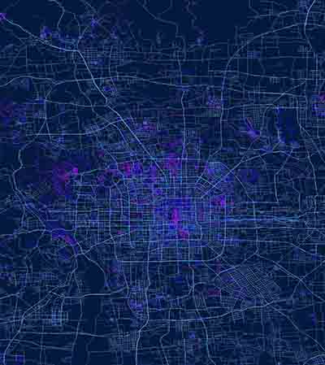
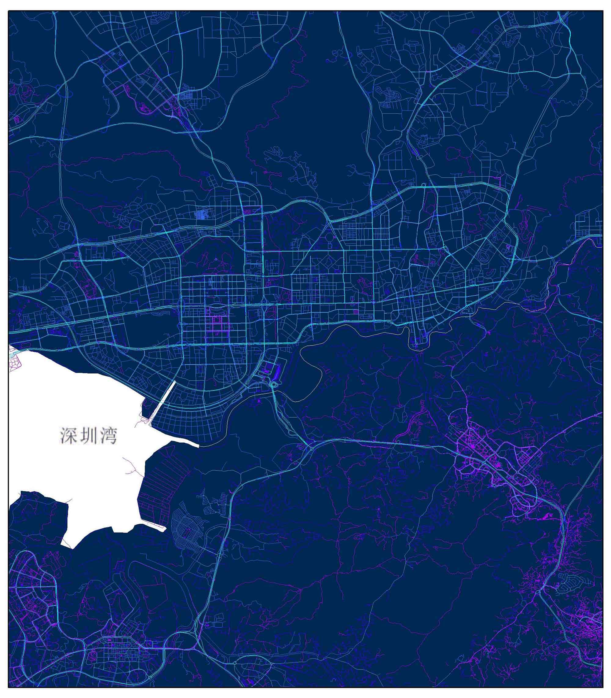
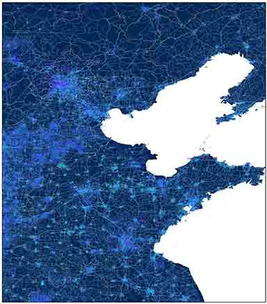
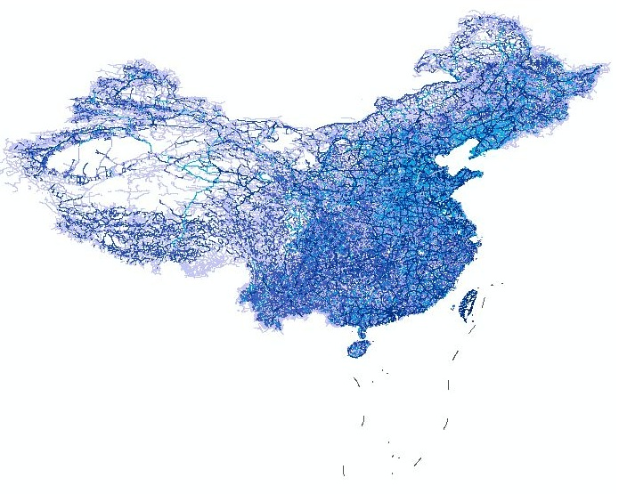
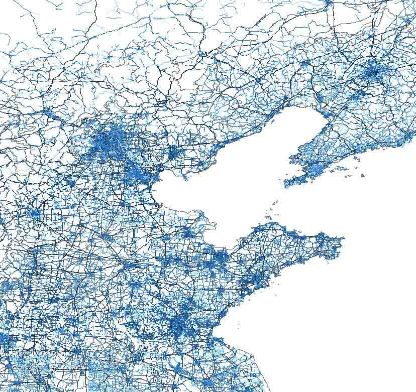
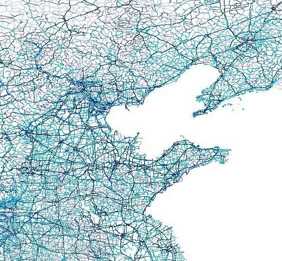
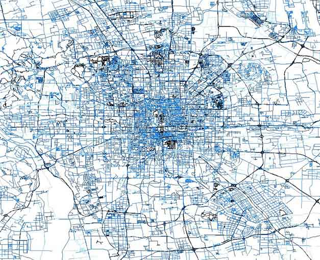
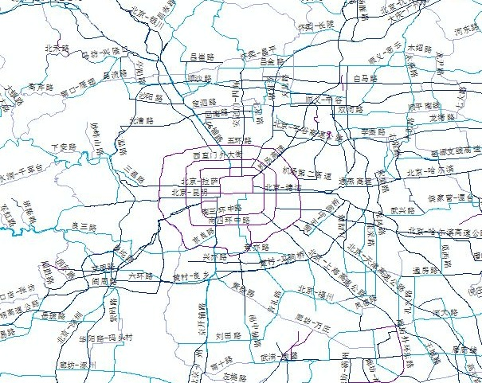
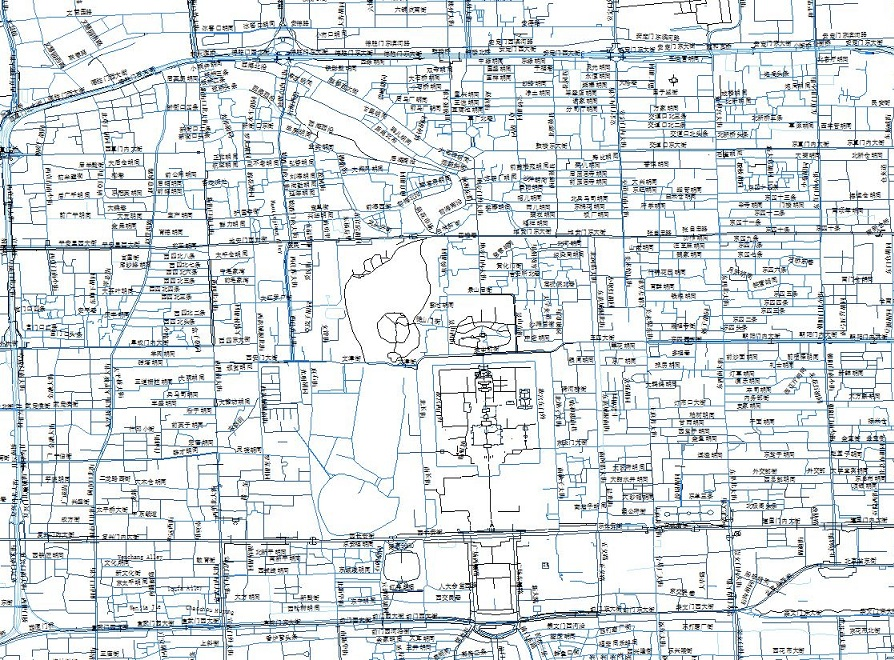
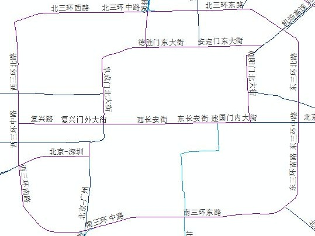

全国道路网矢量数据集
Vector data set of road network of China
数据概况
道路网络是社会有机体的“血管”，城市与城际的“大动脉”与“毛细血管”完美融合，有机体才可以高效的运作。
本站提供的全国道路网矢量数据集，来源于国家基础地理信息中心和Open Street Map，内容包括高速公路、国道、省道、县道、乡道以及乡村小道等，其中，国家基础地理信息中心的数据比例尺为1:100万，OSM的数据为开源数据，均具有非常高的精细度，数据属性相对完整。
空间范围：全国（各省、市、地区）
数据类型：矢量 | ESRI Shapefile
投影坐标：1:100万（2000国家大地坐标系） OSM（GCS WGS 1984）
生产时间：1:100万（2012年、2015年、2017年） OSM（2017年、2019年）
保密等级：公开



数据预览
本站提供的两种不同来源的道路网矢量数据（1:100万和OSM）对比展示
总体预览图 - OSM
总体预览图 - 1:100万


华北地区 - OSM
华北地区 - 1:100万


北京地区 - OSM
北京地区 - 1:100万


北京内环 - OSM
北京内环 - 1:100万


数据下载
提供全国、省级、地市级道路网数据的咨询和下载
该数据为“交换共享”数据，不提供直接数据下载链接，需邮件（gaohr@radi.ac.cn）申请数据进行交换共享，获取共享口令，流程详见本站数据共享说明
使用说明
确定想要下载数据的地区所在的省份
点击左侧地图上的省份，该省份对应的数据列表将在右侧框中显示
在相应位置填写共享口令，点击“下载”获取数据

省级数据位于数据列表上方
如果遇到任何数据问题，如数据下载问题、解压问题、数据投影坐标问题、文件损坏等，请在下方评论区留言，或邮件联系，我将及时答疑或更新，十分感谢您的支持~
建议使用Google浏览器，IE内核浏览器可能不正常显示下载按钮等！
Fighting, GISer!
最新博文